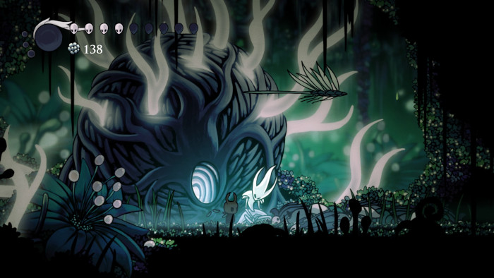
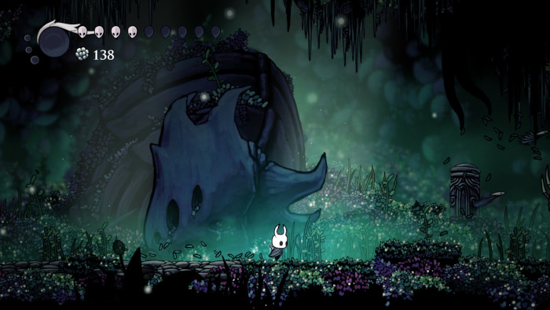

Jardins da Rainha
Os Jardins da Rainha apresentam áreas ajardinadas com fontes e trepadeiras, criando um ambiente harmonioso e sereno.

Serenidade e Harmonia
O terreno é regular, com caminhos claros e habitantes adaptados ao jardim. A sensação é de paz e contemplação em meio à natureza.
